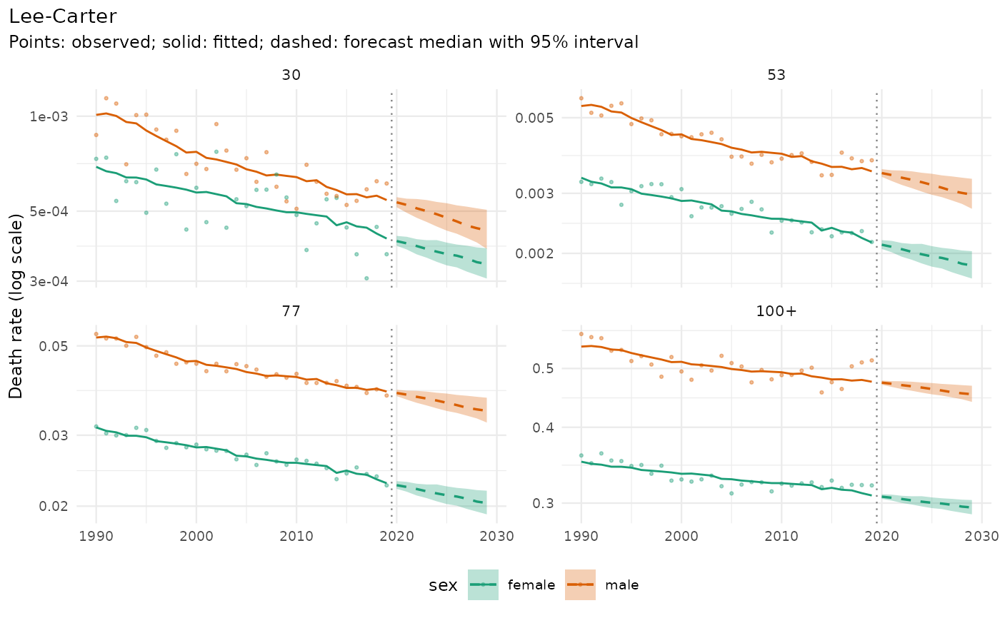

All plot functions return ggplot objects (package ggplot2 must be installed) and never print or write files.
Usage
mt_plot_forecast(
draws,
ages = NULL,
strata = NULL,
levels = 0.95,
data = NULL,
colour = NULL,
log_values = FALSE
)
mt_plot_age(
draws,
periods = NULL,
strata = NULL,
levels = 0.95,
colour = NULL,
log_values = FALSE
)
mt_plot_life_expectancy(
draws,
at = NULL,
levels = 0.95,
strata = NULL,
facet = NULL,
data = NULL,
colour = NULL
)
mt_plot_rates(data, strata = NULL)
mt_plot_coverage(backtest)Arguments
- draws
An mt_draws object.
- ages
Age labels to show (default: four ages across the range).
- strata
Stratum labels to show (default: all).
- levels
Central interval levels for the fans.
- data
An mt_data object (for the forecast plots: the original data, whose observed rates are shown).
- colour
Stratum variable that gives the colours (default: the one with the most levels among the shown strata).
- log_values
Show natural logarithms of the rates on a linear axis (
log(death rate)) instead of rates on a logarithmic axis.- periods
Forecast years (default: first and last).
- at
Age for life expectancy.
- facet
Stratum variable whose levels get one panel each (for example
"sex"), orNULL.- backtest
An
mt_backtest()result.
Details
The forecast plots share one layout (see mt_plot_style): observed
values as points, fitted values as solid lines, forecast medians as dashed
lines with interval ribbons, and a dotted line before the first forecast
year. A step between the solid and the dashed line shows the jump from the
fitted rates to the forecast. One stratum variable gives the colours (by
default the one with the most levels among the shown strata, or
colour), the others give the panels.
mt_plot_forecast(): rates over time, one row of panels per age and one column per combination of the other stratum variables. The points are the training data after preprocessing (for example with interpolated shock years or smoothed rates); give the original data asdatato show the rates as published;mt_plot_age(): age profiles of the forecast for selected years (default: the last);mt_plot_life_expectancy(): life expectancy, observed, fitted and forecast (observed fromdataif given, otherwise from the training data), with one panel per level offacetif given;mt_plot_rates(): Lexis surface (age by period) of observed log rates;mt_plot_coverage(): empirical interval coverage by horizon from a backtest, with the nominal levels.
Examples
if (requireNamespace("ggplot2", quietly = TRUE)) {
x <- mt_example(deaths = "single")
fc <- mt_forecast(mt_fit(lee_carter(), x), h = 10, n_draws = 100, seed = 1)
mt_plot_forecast(fc)
}
